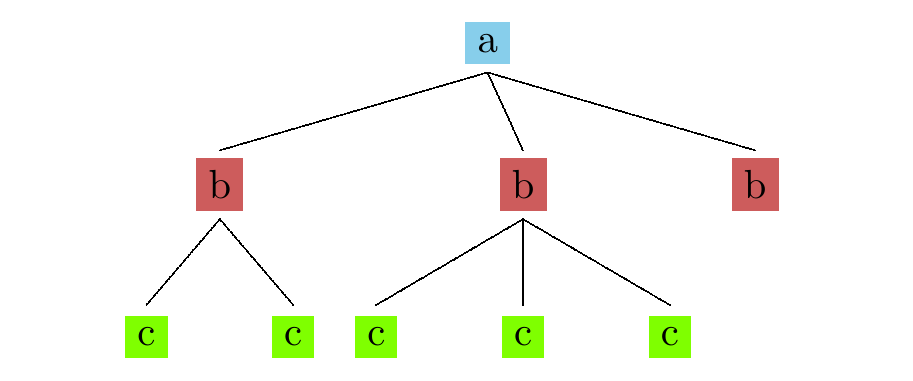

Nondeterminism
Tikhon Jelvis (tikhon@jelv.is)
Press → key to advance.
Zoom in/out: Ctrl or Command + +/-
1 Function Composition
a → b,b → c,a → c- one function after another
- directly pass results in between
x ⇒ af ⇒ bg ⇒ c
2 Monads
- customize function composition
- “different shape” of function
a → m bvsa → bmis a “slot” to insert custom behavior
3 Lists
- consider
mas[] a → [b],b → [c],a → [c]- different shape: tree!
a → [b]- nondeterministic function from
atob
- nondeterministic function from
4 List Composition
f <=< g
f ⇒ [b] x ⇒ a map g ⇒ [[c]] concat ⇒ [c]
- so for lists,
join = concat
5 A Lazy Tree

- result:
[c, c, c, c, c]- lazy
6 Map Coloring

7 Map Coloring

8 Step
step :: Coloring -> Vertex -> [Coloring]
step graph vertex =
map (color vertex) possible
where possible =
colors \\ neighbors vertex coloring
- try every available color
- if none: returns
[]- branch terminated
9 foldM
listToMaybe $ foldM step emptyColoring nodes
foldMencapsulates backtracking logic- like nested loops
listToMaybe≅safeHead
- all works thanks to laziness